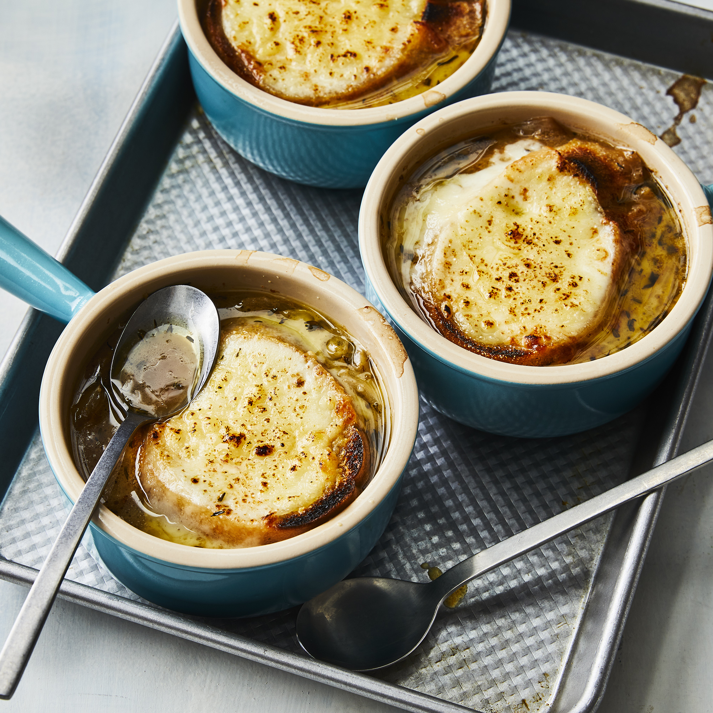

French Onion Soup

What is French Onion Soup?
French onion soup is a classic French dish made with caramelized onions
and beef stock or broth. The soup is topped with bread and cheese,
then gratineed to rich, gooey perfection. It's traditionally served in
a ramekin or a crock.
Ingredients
- 1/2 cup unsalted butter
- 2 tablespoons olive oil
- 4 cups sliced onions
- 5 cups beef broth
- 2 tablespoons dry sherry
- 1 teaspoon dried thyme
- 1 pinch salt and pepper to taste
- 4 slices french bread
- 4 slices provolone
- 2 slices swiss
- 1/4 cup grated parmesan
Steps
- Melt butter with olive oil in an 8-quart stock pot over medium
heat. Add onions and continually stir until tender and
translucent. Do not brown the onions.
- Add beef broth, sherry, and thyme. Season with salt and pepper.
Let simmer for 30 minutes.
- Meanwhile, preheat the oven's broiler.
- Ladle souop into oven-safe serving bowls and place one slice of
bread on top of each (bread may be broken into pieces if you
prefer). Layer each slice of bread with a slice of provolone, 1/2
slice diced Swiss and 1 tablespoon Parmesan.
- Place bowls on a cookie sheet and broil in the preheated oven until
cheese bubbles and browns slightly, 2 to 3 minutes.